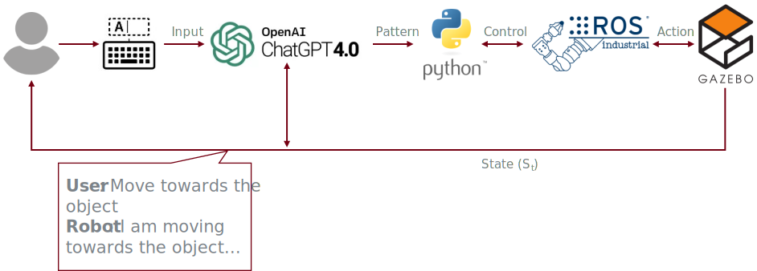

Project Overview
This project investigates how Large Language Models (LLMs) and Vision Language Models (VLMs) can enhance robotic control, perception, and situational awareness in human-robot interaction.
Methodology
Framework Overview:
- Language Processing: Using LLMs to translate natural language commands to robotic actions.
- Perception and Control: Integrating VLMs for enhanced object detection and task execution.
Experiment Results
Baseline Control
Goal: Test low-level grasping and obstacle avoidance.
Result: High success rate with low error in task execution.